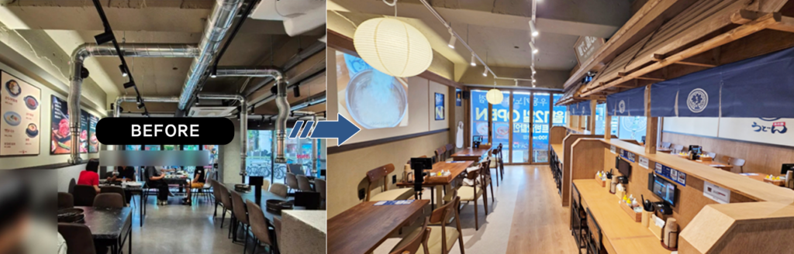
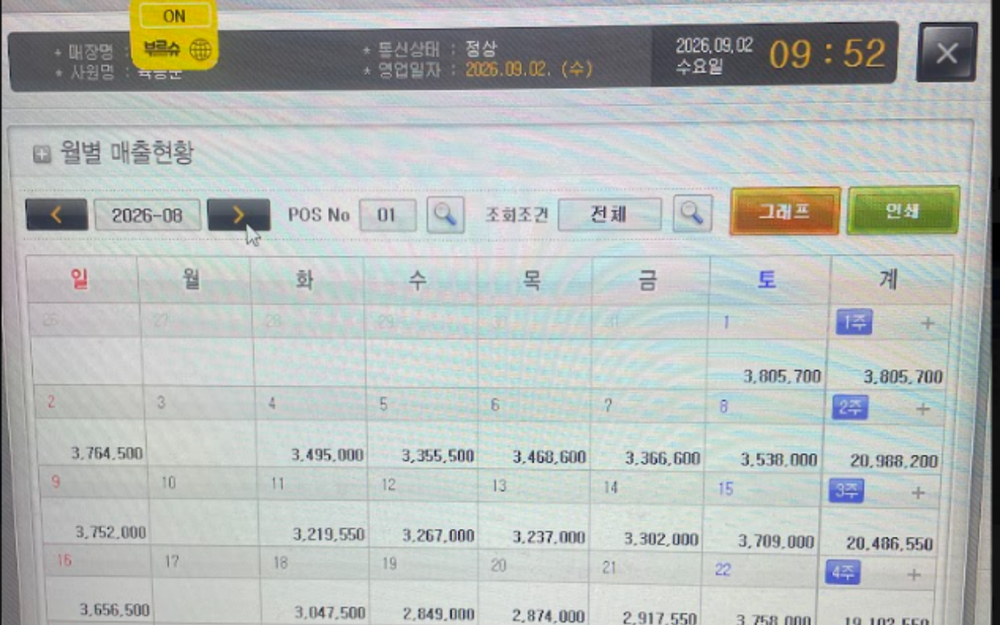
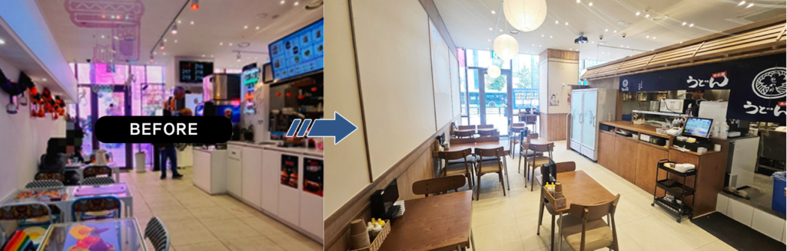
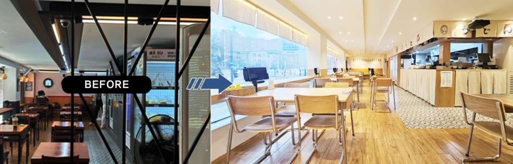
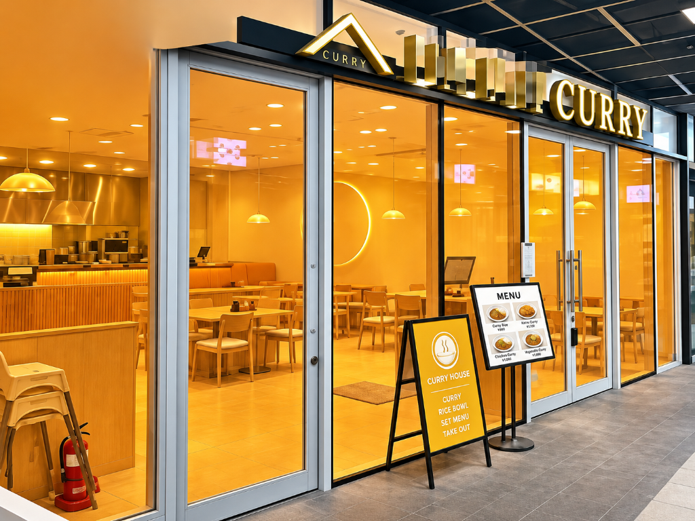
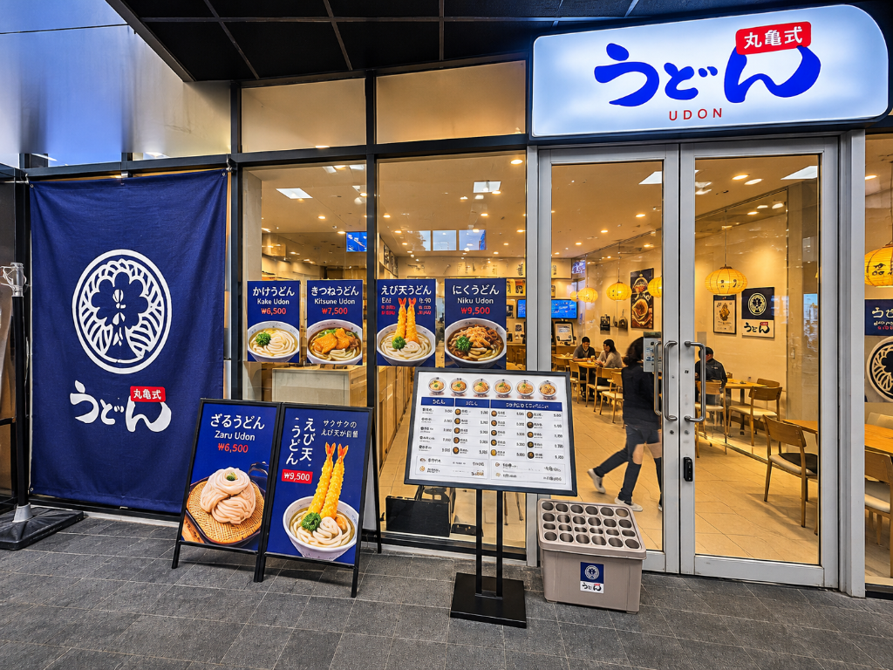
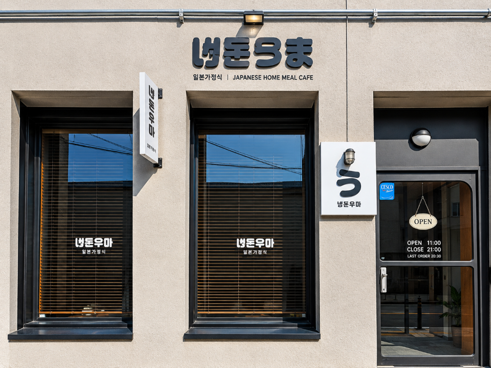
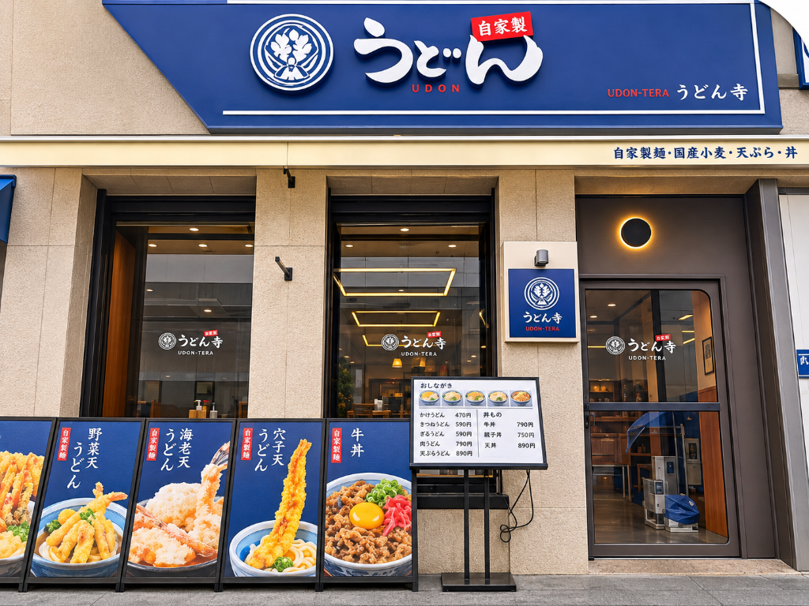
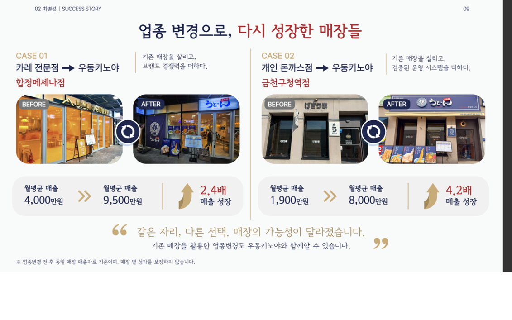

BEFORE
리뉴얼 전 기존 일반식당

AFTER · KINOYA
최소 리뉴얼로 우동키노야 오픈
우동키노야는 어떤 브랜드이고, 왜 운영이 가능한지, 본사와 점주의 역할은 무엇인지를 순서대로 설명합니다.
본사가 제면·숙성·패킹을 표준화해 공급하고, 매장은 삶고 담는 조리에 집중하는 구조입니다. 이 구조를 통해 초보 창업자도 접근 가능한 운영 난이도를 목표로 합니다.
보다 손쉬운 재료손질과 한템포 빠른 회전율이 핵심입니다.

이는 구리본점의 일 최고매출 사례이며 전 매장 평균이 아닙니다. 매출은 상권·평수·좌석수·영업시간·운영능력에 따라 달라질 수 있으며 본사는 매출을 보장하지 않습니다.
1~2인 고객과 빠른 회전율에 최적화된 다찌(바석) 중심 소형 매장 컨셉입니다. 주방과 홀 동선을 일체화해 인건비와 초기 투자비 부담을 낮췄습니다.
2인·4인 홀 테이블과 1인 다찌석을 결합해 직장인·가족·혼밥 수요를 동시에 흡수하는 표준 복합 매장 컨셉입니다.
무권리 점포나 기존 식당의 바닥·천장·설비 인프라를 최대한 살리고 우동키노야의 핵심 외관·다찌·사인물만 리뉴얼하여 거품을 뺀 실속형 공사입니다.
현재 운영 중인 매장 자리에서 기존 주방·홀 설비를 재활용하여 최소 비용으로 우동키노야로 재도약하는 기존 업주 맞춤형 업종변경 솔루션입니다.
창업시장의 높은 비용을 고려하며 고민한 끝에, “우리가 우동키노야라는 브랜드 인식만 확립하면 되지 않을까?”라는 결론을 내렸고, 이에 대한 비용 절감 해법을 제시합니다.
일반적으로 20, 30평 규모의 신규창업에는 3억 원까지도 소요됩니다. 우동키노야는 브랜드의 아이덴티티를 유지하면서도, 기존 점포를 리뉴얼하는 방식으로 보다 합리적인 창업 비용을 실현했습니다.
창업시장 거품을 최대한 걷어내면서 권리금이 없거나 최대한 합리적인 곳을 발굴하겠습니다.
우리는 지나치다 싶을 정도로 꼼꼼하게 준비합니다. 그 이유는 단순합니다.
좋은 브랜드란, 투자금을 최대한 빠르게 회수할 수 있도록 설계되어야 한다고 믿기 때문입니다. 창업비용을 더욱 합리적으로 낮추기 위해 지속적으로 연구하고 있으며, 본사와 연계된 대출/렌탈 프로그램도 마련해 두었습니다.
저희는 여러 개의 매장을 운영하실 분보다는 “하나의 매장을 성실히 운영해 나갈 분을 찾고 있습니다.” 우동 키노야와 목표를 공유하며 함께 성장할 분을 기다립니다. 언제든 문의해 주시면 친절하게 설명해드리겠습니다.
| 구분 | 금액 | 품목내역 |
|---|---|---|
| 가맹비 | 1,000만 |
브랜드사용(상표권,상품), 메뉴얼제공, 영업구역보호, 슈퍼바이져파견, 경영지도 가맹100호점까지 가맹비 30% 지원 · 가맹100호점까지 교육비 40% 지원 |
| 교육비 | 500만 | 조리교육, 매장운영교육, 현장실습 (교육기간 2주 / 점주포함 2인) |
| 실내인테리어 | 5,550만 |
실내인테리어 · 테이블 · 의자 목, 도장, 전기, 조명, 설비, 바닥, 천장, 방수, 타일공사, 실내닥트 외 실내인테리어 일체 ※ 건물 1차인프라시공 후 적용범위 |
| 주방설비/집기/간판 | 3,300만 |
주방설비/집기 (홀포함) · 4인 세트 기준 2인/4인/붙박이 소파 배치와 바테이블 세팅에 따른 금액 변동有 우동면기, 전기튀김기, 숙성고, 간택기, 중탕기, 세척기, 씽크대, 냉장고, 냉동고 외 선반/작업대 등 설비 일체 · 각종 주방/홀용품(집기류,비품), 그릇, 접시, 기타 셋팅 일체 |
| 홍보/영업준비 | 400만 |
전면 5M 기준 · 메인간판 1EA, 시트지, 스카시, 액자/사인물 일체 (점포 스펙에 따라 변동 · 외부/돌출 별도) |
| 별도공사 | 별도 | 점포 스펙에 따른 변동 (내외부 포함) |
기존 점포를 활용한 우동키노야 리뉴얼 사례.
무권리 점포 기준 7,200만~8,200만원으로 오픈한 매장입니다.



“같은 자리, 다른 선택, 매장의 가능성이 달라졌습니다.
기존 매장을 활용한 업종변경도 우동키노야와 함께할 수 있습니다.”
기존 매장을 살리고, 브랜드 경쟁력을 더하다.


기존 매장을 살리고, 검증된 운영 시스템을 더하다.



※ 업종변경 전후 동일 매장 매출자료 기준이며, 매장 입지·평수·운영 여건에 따라 결과는 달라질 수 있습니다.
오픈 후 1주·1개월·100일 점검 등 운영 지원 프로그램은 실제 운영 여부를 상담 시 최신 기준으로 안내해 드립니다.